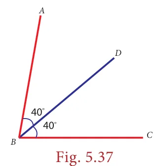
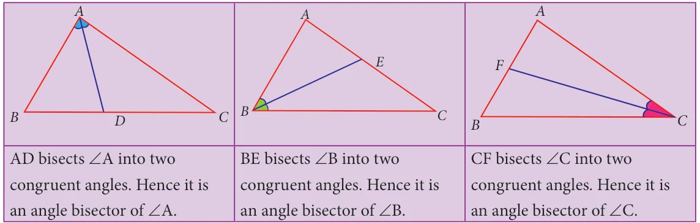
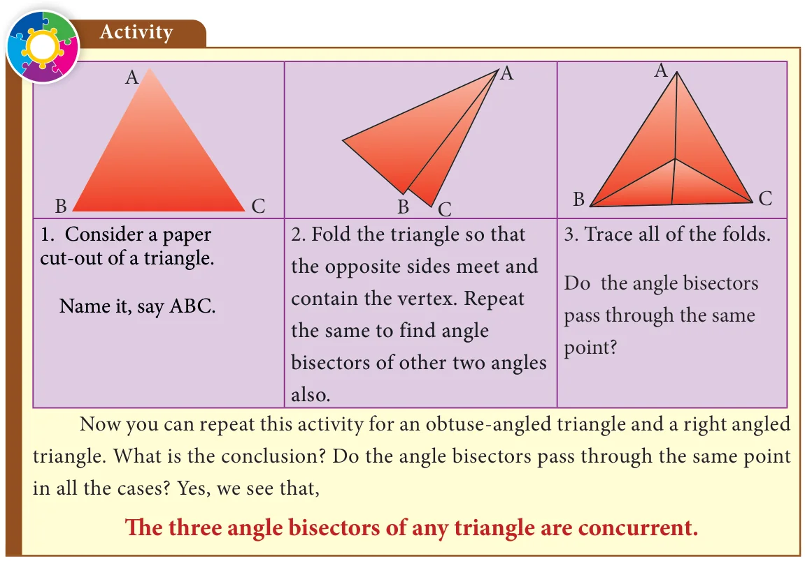
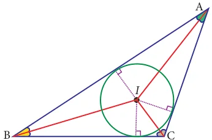

We have learnt about angle bisectors in the previous class. An angle bisector is a line or ray that divides an angle into two congruent angles. In the figure, \(\angle ABC\) is bisected by the line BD such that \(\angle ABD = \angle CBD\).

Consider a triangle ABC. How many angles does a triangle have ? 3 angles. For each angle you can have an angle bisector as follows:


5.9.1 Incentre
The point of concurrence of the three angle bisectors of a triangle is called as its incentre, denoted by the letter I.

Why should it be called so? Because one can draw a circle inside of the triangle so that it touches all three sides internally, with centre at the point of concurrence of the angle bisectors. The lengths of a perpendicular line drawn from incentre to each side is found to be same. Thus, the incentre is equidistant from the sides of the triangle.
Example 5.20
Identify the incentre of the triangle PQR.

Solution:
Incentre is the point of intersection of angle bisectors.
Here, PM and QN are angle bisectors of \(\angle P\) and \(\angle Q\) respectively, intersecting at B.
So, the incentre of the triangle PQR is B.
(Can A and C be the incentre of \(\triangle PQR\)? Why?)